<!----------------------------------------------------------------
------------------------ Research Section -----------------------
----------------------------------------------------------------->
<section id="research" class="research">
  <div class="container">

    <div class="section-title">
      <h2></h2>
      <p>Research & Engagement Highlights 2025</p>
    </div>

    <hr>            
    <h4>A Year of Field Autonomy, Innovation, and Academic Milestones</h4>
    <hr>

    <div class="whole-wrap">
      <div class="container">
        <div class="section-top-border">
          <div class="row">
            <div class="col-lg-12">
              <p style="text-align: justify;">
                2025 has been a landmark year for my work at Macquarie University. Our team pushed the boundaries of <strong>autonomous maritime and aerial systems</strong> through intensive field testing, capturing critical data in diverse environments—from industrial logistics hubs to open water deployments. 
                A significant highlight was our engagement with the student community, through research collaborations and Open day demonstrations.
              </p>
              <p style="text-align: justify;">
                The year also marked profound personal and professional milestones — from celebrating <strong>graduation ceremonies</strong> to representing our research at leading innovation hubs and university showcases. Each experience strengthened my commitment to bridging the gap between complex autonomous systems theory and meaningful, real-world human impact.
I was deeply honored to be selected as the year’s valedictorian, where I had the opportunity to reflect on my journey and share the lessons, challenges, and aspirations that shaped my experience.
              </p>

                <div style="margin-top: 40px;">
                <h5><i class="icofont-certificate"></i> Graduations & Research Showcases</h5>
                <div style="display: flex; flex-wrap: wrap; gap: 10px; justify-content: center;">
                  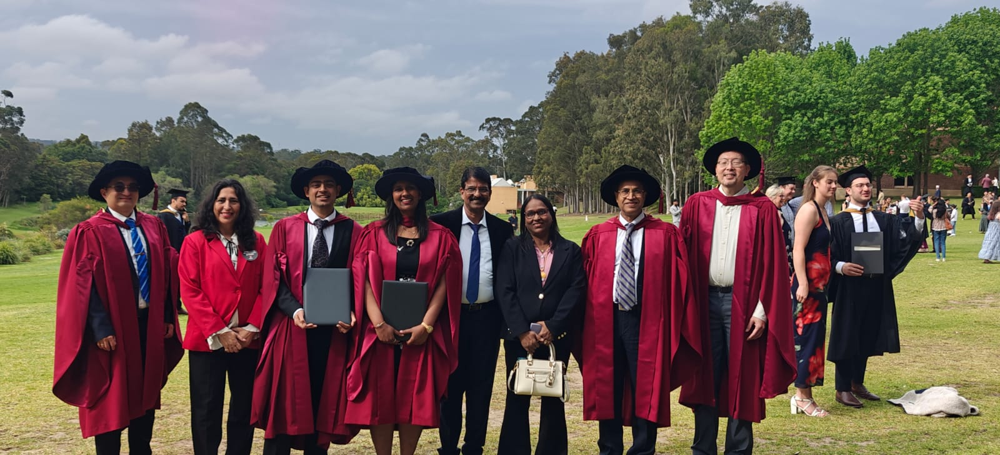
                  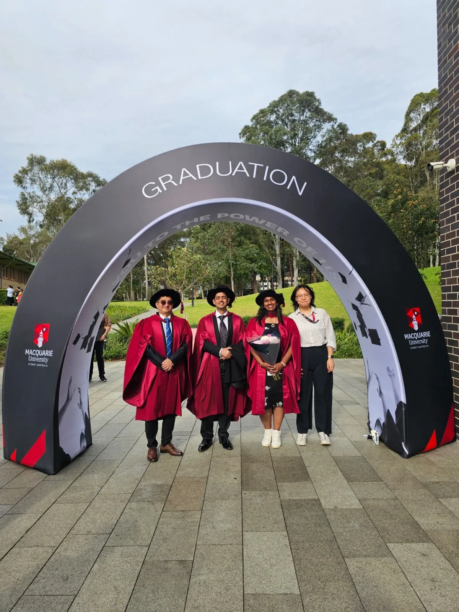
                  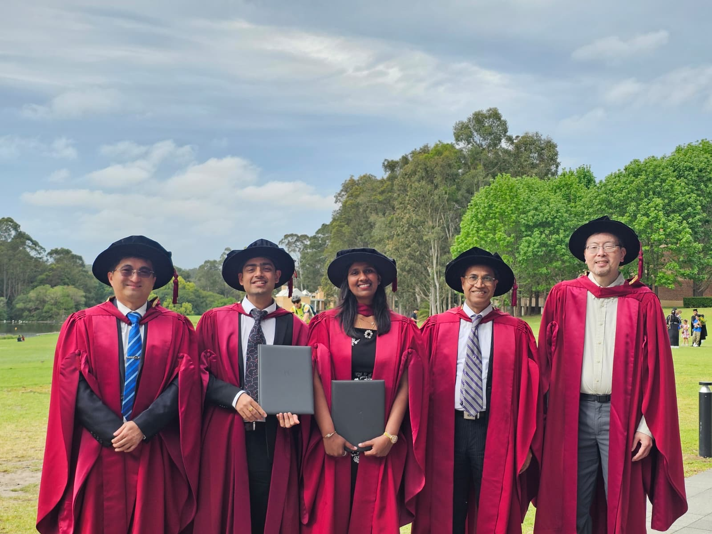
                  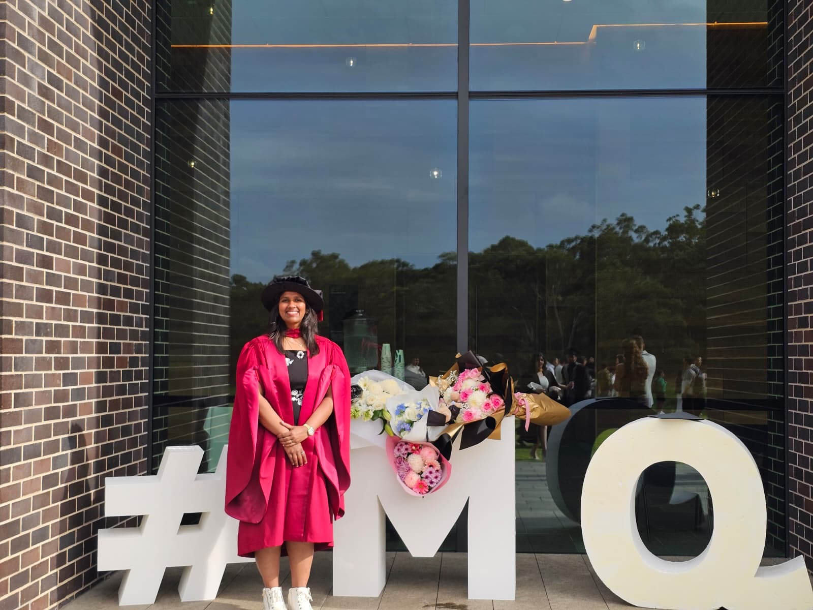
                  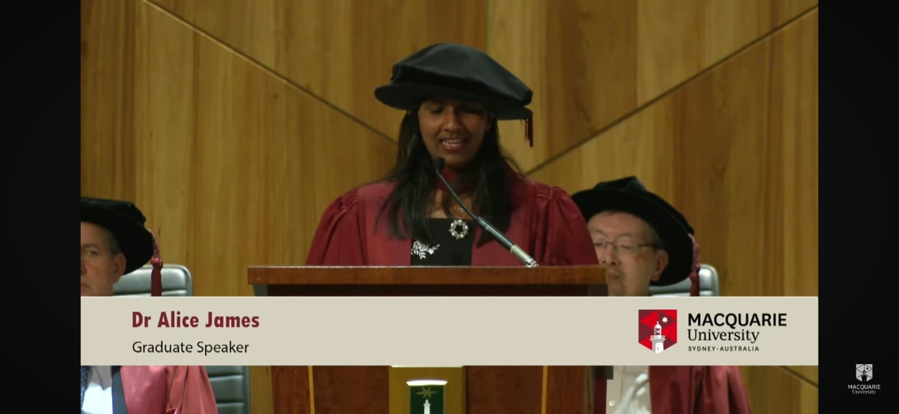
                  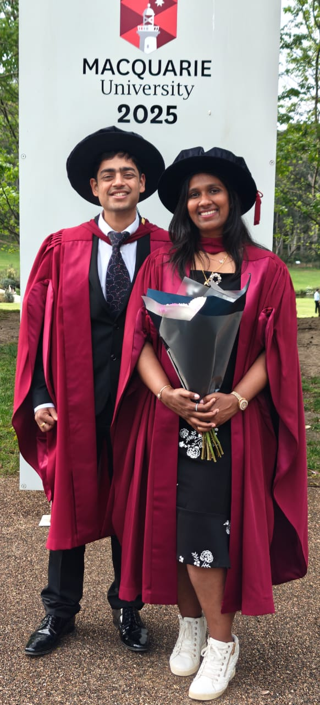
                  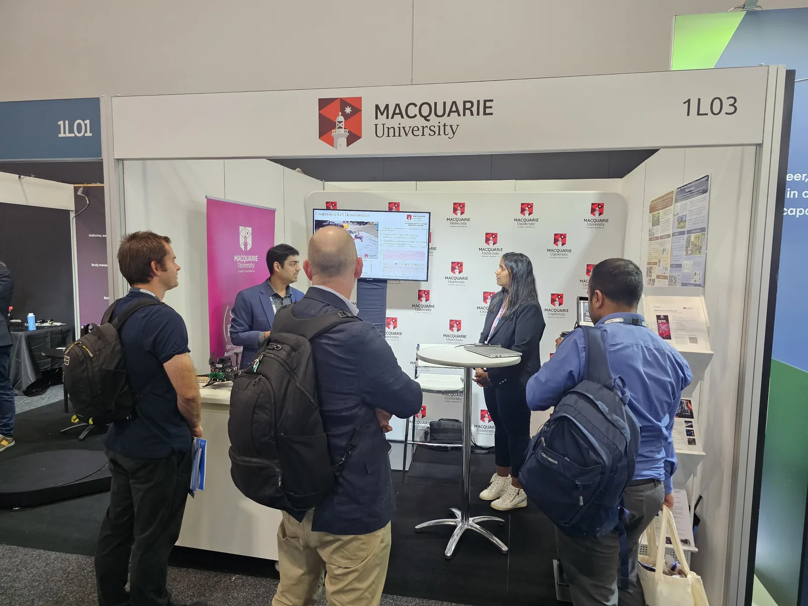
                </div>
              </div>
              
              <div style="margin-top: 30px;">
                <h5><i class="icofont-UI-settings"></i> Field Deployments & Maritime Systems</h5>
                <div style="display: flex; flex-wrap: wrap; gap: 10px; justify-content: center;">
                  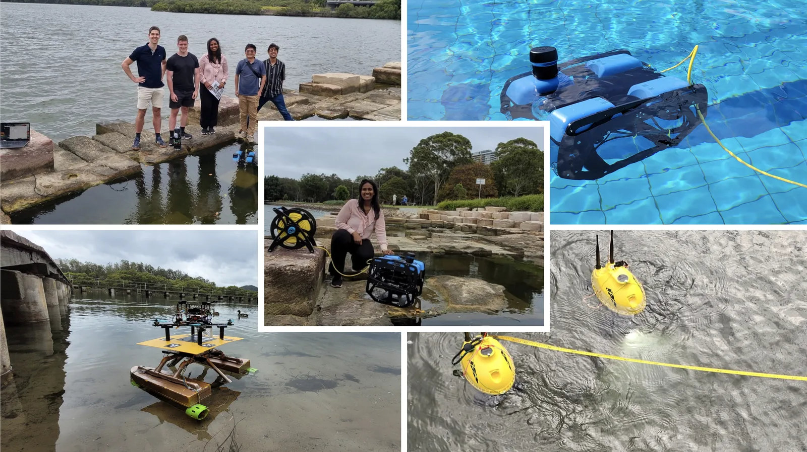
                </div>
              </div>

              <div style="margin-top: 40px;">
                <h5><i class="icofont-users-social"></i> Student Leadership & Robotics Competitions</h5>
                <div style="display: flex; flex-wrap: wrap; gap: 10px; justify-content: center;">
                  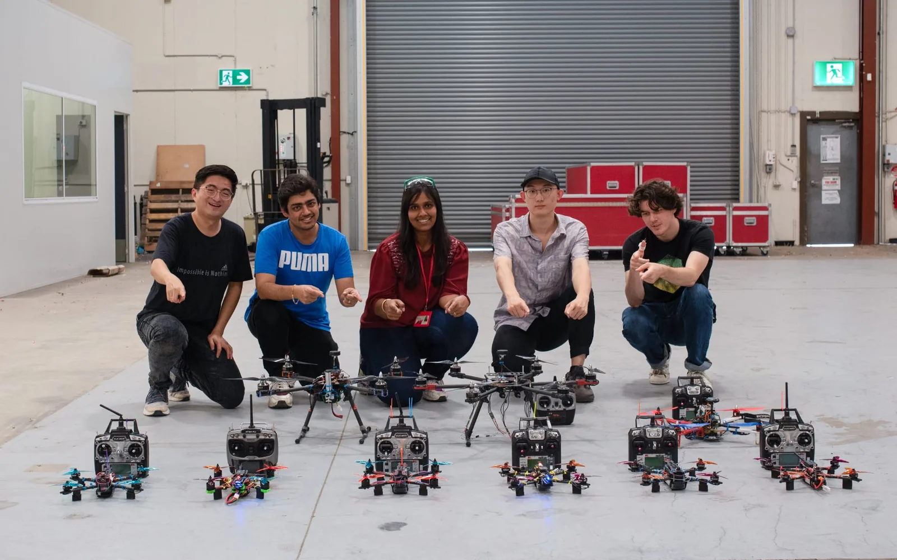
                  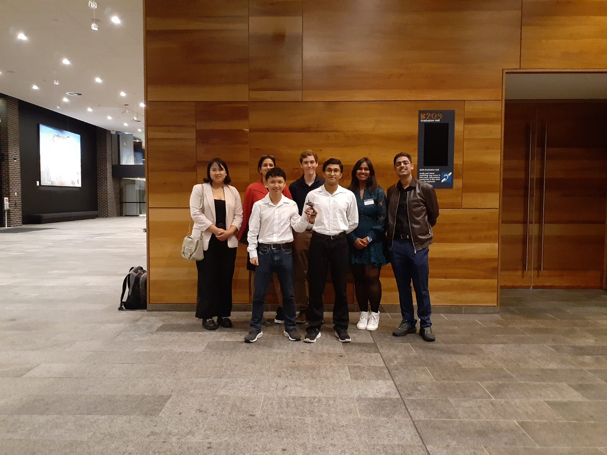
                  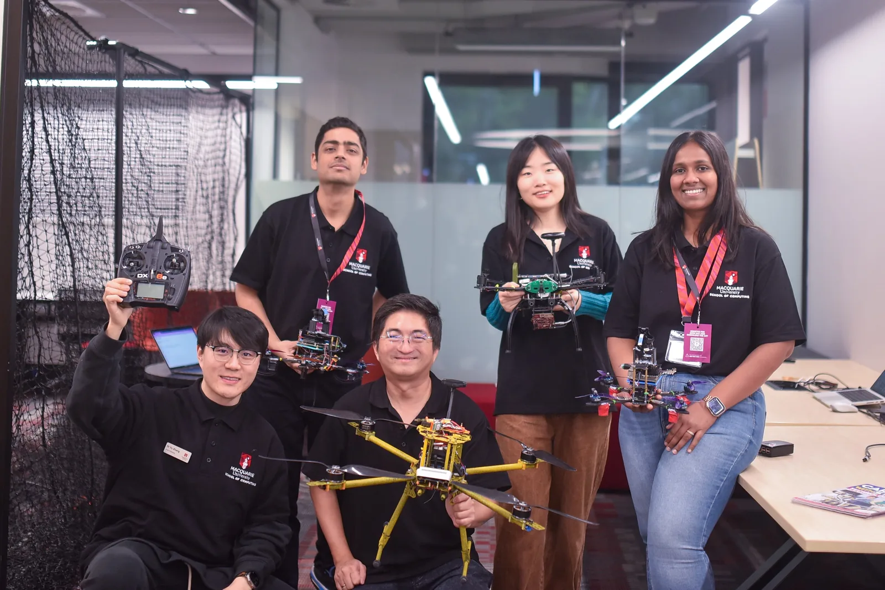
                  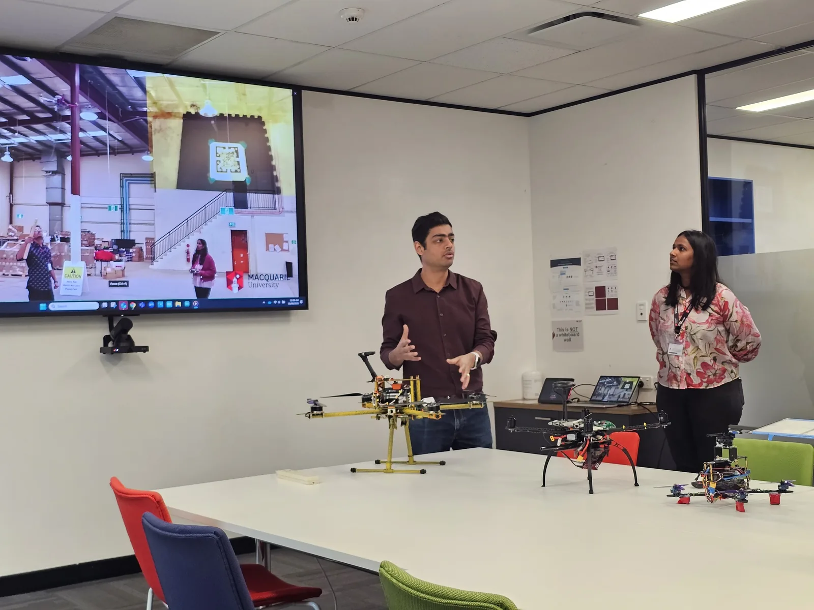
                </div>
              </div>

            </div>
          </div>
        </div>
      </div>
    </div>

  </div>
</section>
  

  <!---------------- End Services Section ----------------->
  
  
